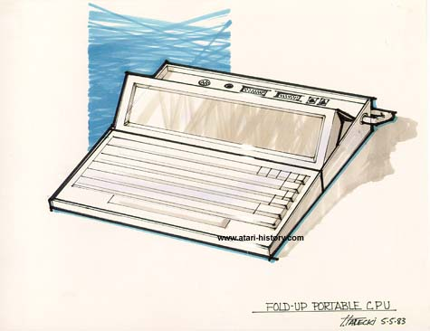

This design is rather interesting in that the laptop folds up into a small
rectangular case and upon opening and tilting the screen up, a protective
cover slides back to reveal telephone jacks for connecting to data networks
for retreiving email and other data and connecting various peripherals
and power to the unit.